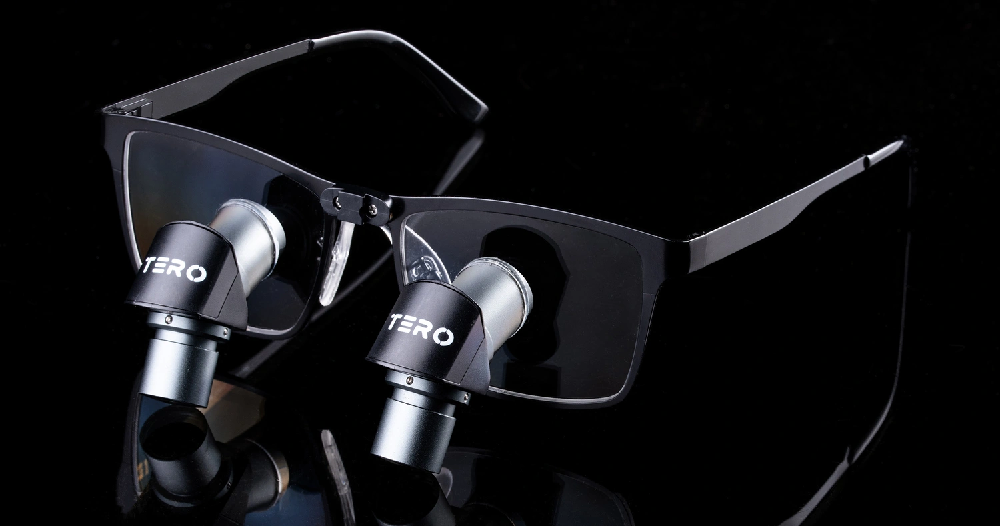
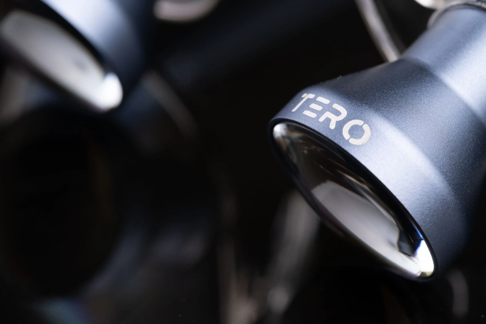

TERO OPTICS
See beyond
the ordinary.
Precision optics, light and support for the way you work.

THE HUMAN PERSPECTIVE
Leaning in
for a closer look.
On a standard stool and without loupes, the dentist bends the neck and rounds the back to see the working field.
A different way to see. A more considered way to work. Every detail begins with your perspective.
From the optics in front of you to the seat beneath you.
Discover the elements of the TERO collection.
Find your
point of view.
Different optical systems.
One considered collection.

ERGO HD
An angled optical system designed around a more natural viewing posture. Explore five magnification options in the ERGO HD family.
- Optical family
- Ergonomic
- Available magnifications
- 3.5× — 8.0×
Explore a family here. Confirm your final fit and configuration using the TERO catalog.
Compare magnifications before you choose.
Drag the loupe across the plaster models to see how each magnification frames the field. Higher power shows finer detail in a smaller, shallower field, so the right choice depends on the work you do most.


Small details.
A different world.
Look closer. The shape of the housing.
The meeting of frame and optic.
The details that define TERO.

Light.
Where it matters.
White light, with a warmer perspective at a touch. Lower the amber cover and watch the beam shift to a soft, warm tone. Explore the amber-filter setting for composite work.
WHITE → AMBER · The light stays on.A visual demonstration of the filter effect.
A place for
your best work.
A complete setup goes beyond what you see. Meet the TERO chair, with a distinctive saddle-style seat and support.
COLLECTION
A clearer
understanding.
Which optical families can I explore?+
The collection includes ERGO HD, ERGO HD ZM, Galilean, Galilean HD and Prismatic. Use the comparison view to see the magnifications listed in the TERO catalog.
How do I choose a magnification?+
Magnification, working distance and fit should be considered together. Your saved selection is a starting point for discussing the right configuration.
Is the interactive view an exact product model?+
The 3D scene is an illustrative design study based on TERO photography, not a dimensional engineering model. Refer to the original photographs and catalog for product details and available configurations.
Where can I find the full specifications?+
Open the TERO catalog ↗ to explore the optical systems. Frame and accessory combinations shown here are visual references.
Look closer.
See differently.
Explore the details.
Discover your TERO.